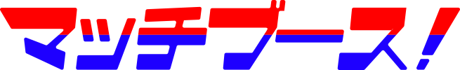
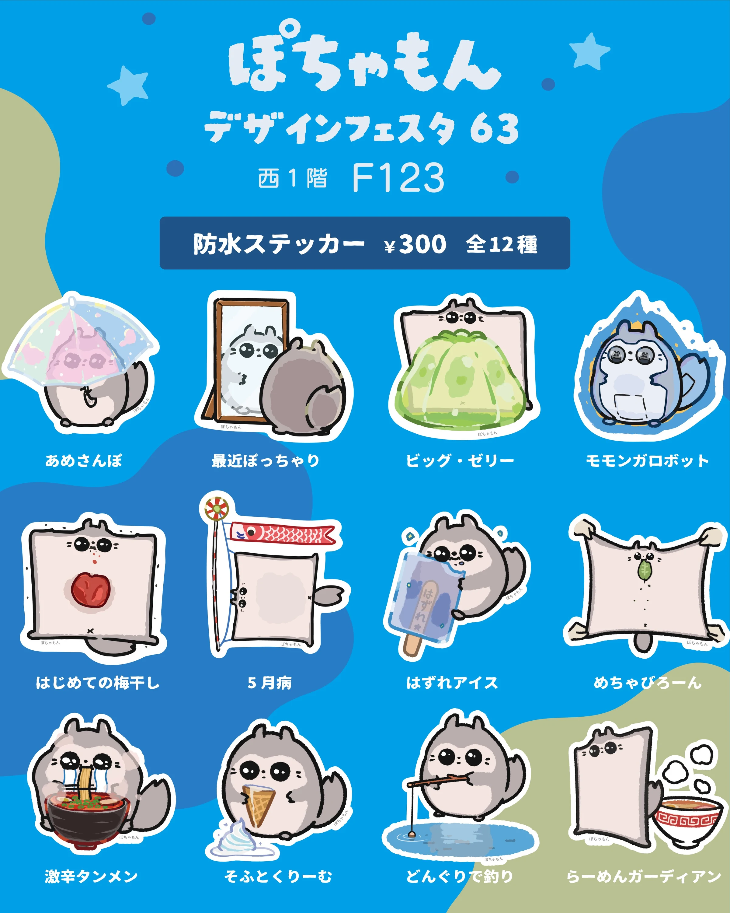

Works
ぽちゃっとしたモモンガが自由に動き回る！ころころ楽しい手描きアニメーションの中で元気に過ごしています。TikTokでアニメを展開中で、グッズはデザインフェスタなどの展示会でご購入いただけます。

すしとゆきだるまが合体！可愛く飛び跳ねるアニメーションが特徴のキャラクターです。老若男女に親しまれることを目指し、グッズ展開やイベント出展、ホームページの制作まで自分の手で行っています。

ゲームイラストやアパレルコラボなど、クライアントワークの実績が多数あります。アニメ調のイラストから厚塗りまで、幅広い技法を取り入れて世界観を表現しています。

Cute Girls Collection
通称「ばーば」で親しまれている、とっても可愛らしい72歳の乙女。Xではその愛くるしさで大人気になりました。活動2周年記念の「ギンピカアニバーサリー」や、国内最大規模のオンラインイベント「NFT紅白」など、キャラクターを軸にした企画・特設サイトの制作・運営まで一貫して手がけました。
-

同人誌即売会向けのブースマップWebサービス。お気に入り登録、出展者の本人登録、Xの投稿埋め込みで「どこに行くか」を決められる。企画から設計・実装・公開まで。 Cloudflare Pages / Workers / D1→ - OB Lite GitHub同期のノートをスマホで読み書きできるPWA。Obsidian互換のMarkdownエディタに、端から端まで暗号化した共有リンクと買い切りProを実装。日英2言語で公開中。 PWA / GitHub App / Stripe→
-
Aurora Voice Windows向けの音声入力ツール。話した言葉を文字に起こし、箇条書きや文体まで整えて貼り付ける。音声もテキストも外に送らない完全ローカル設計。 Python / whisper.cpp / llama.cpp
-
AIコーディング支援（Claude Code）専用のデスクトップクライアント。複数の会話をタブで並べ、回答を記事のように読みやすく表示する。Windowsアプリとして自作。 Python / HTML & JS / Windows App
Profile

2016年に独学で絵を始め、アニメ調からリアル厚塗りまで幅広いテイストを武器にクライアントワークを展開。全国イラストコンテスト（ヒューマンアカデミー主催）最優秀賞を受賞し、本格的に商業制作へ。
ゲームイラスト、アパレルコラボ、キャラクターデザインなどジャンルを越えた制作実績に加え、Webサイトのデザイン・コーディング、Webアプリ・サービスの企画と開発まで、自分の手で形にしています。1級色彩コーディネーターの資格を活かした配色設計も強み。
オリジナルキャラクター「すしだるま」「ぽちゃもん」はSNS・イベントで展開中。絵が描けて、デザインもコードも書けて、企画から考えられる——イラスト1枚からアプリまで、ひとりで一貫して手がけられるのが持ち味です。
- Illustration
- Character Design
- Web Design
- Coding
- App Development
- UI / UX
- 企画・ディレクション
News

- 2025.11.16 Exhibition 出展情報：FANTASIA2025に出展します。すしだるまグッズをお楽しみください。 →
- 2025.11.8 Exhibition 出展情報：デザインフェスタ62に出展します。新作グッズも多数ご用意。 →
- 2025.9.19 Exhibition 作品展示「東海道五拾六次目」に参加。新作イラストを展示します。 →
- 2025.8.31 Exhibition COMITIA153に出展。すしだるまグッズを取り揃えてお待ちしております。 →
- 2024.12.23 New Work 『White End』新作案内。冬のかけら展示作品のオークションを実施します。 →
Contact

イラスト1枚から、キャラクター開発・Web制作・アプリ開発まで。
「こんなことできる？」というラフな構想段階でも歓迎です。
- ご相談・お見積りは無料
- 通常2〜3営業日以内にご返信
- 企画段階からの持ち込みOK
- キャラクターデザイン・イラスト制作Character
- ゲーム・アパレル等のクライアントワークClient Work
- Webデザイン・コーディングWeb
- アプリ・サービスのUI/UX設計・開発のご相談App / UX
-
ご相談 X(twitter)のDM、またはフォームからお気軽にどうぞ
-
お見積り・スケジュール 内容を伺い、費用と納期をご提案します
-
制作・納品 ラフ確認を挟みながら制作を進めます